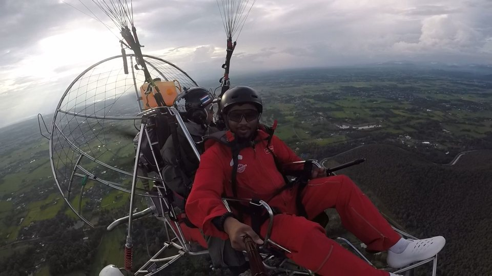
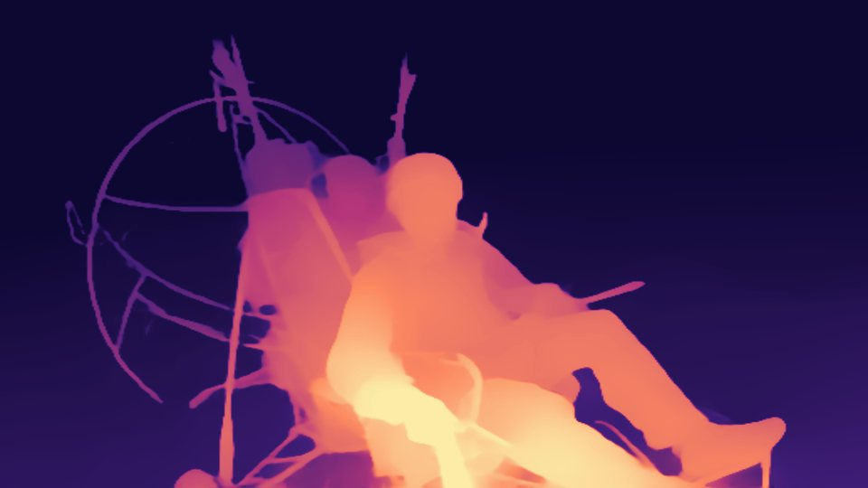

Travel reels, cut from raw footage on your Mac.
Jauntcut turns phone and GoPro clips into finished Instagram reels. Vision models read every frame on your laptop, each edit is a small typed file, and quality gates stop a bad cut before it renders.
Why Jauntcut
Hand-cut reels, without the evening of editing.
Phone editing apps make every place look like the same template. Jauntcut gives each place its own type and transitions, and does the measurable work for you: timing to the beat, placing text, catching repeats and colour jumps.
Sees the footage
Subject cutouts, depth, saliency, faces, on-screen text and stabilisation, all with Apple Vision and Core ML on your Mac.
Edits are code
A reel is one small TypeScript file: clips, beats and effects. Easy to diff, version and repeat, and validated before anything renders.
Gates before render
Text over a face, the same scene twice, a dead hold or a clipped highlight fails the check, with the exact clip and the fix.
Cut to the beat
Beat and tempo analysis puts every cut on the music. Works with your own track or a guide copy of a trending Instagram sound.
11 title styles
From handwritten to film-title lockups and race lettering set into the tarmac, each built once and reused on any reel.
15 transitions
Doorway portals, match cuts, whip pans, light-order dissolves and a sketch-to-watercolour wash, plus the plain cut.
Made with Jauntcut
Every reel gets its own look.
Four reels cut from raw travel footage. Tap one to play it.
Shown without music here; songs are licensed on Instagram.
How it works
Eight stages, in a fixed order.
Each stage writes files the next one reads, so any stage can be rerun on its own, and a failed gate stops the render.
- Sort & prepareSort by GPS and time; normalise phone, GoPro and photo media
- AnalyseSubjects, depth, saliency, faces, beats
- EditOne typed
reel.tsper reel - LayoutText goes where it covers the least
- CheckSchema, media, timing and pacing rules
- QA beforeRepeats, faces under text, colour jumps
- RenderReact compositions to 1080×1920
- QA afterFrozen frames, loudness, the Instagram file spec
On-device vision
What Jauntcut sees in one frame.
Every model runs from a small Swift tool on your Mac and writes JSON or PNG for the next stage. No frame is sent anywhere.




Edits as code
A reel is one small, typed file.
It lists the clips, their length in beats and every effect. A schema validates it before anything renders, so a typo or an impossible value fails in a second, not after a full render.
- RepeatableChange one line and render again. Every version is a diff.
- Reasons next to choicesComments record why each clip is there, so the next edit starts from that history.
- Preview live
npm run studioopens the reel in the browser while you edit.
export const reel: ReelInput = {
slug: "chiang-mai-circuit",
style: "energetic",
hook: "Not your usual Chiang Mai day",
titleStyle: "race",
clips: [
// line-up POV, the hook
{ src: "IMG_2595.MOV", beats: 10, startAt: 0.2 },
// a photo: we lift off the garage
{ src: "FF2905C1.jpg", beats: 3, motion: "push-in",
parallax: { amount: 0.07, x: 0.5, y: 1.0 } },
// the drop, at half speed
{ src: "IMG_2618.mov", beats: 6, startAt: 1.6,
ramp: { atBeat: 1, speed: 0.5 } },
],
};Quality gates
Nothing renders until it passes.
Each gate reports what the code actually produced. Thresholds come from measuring real footage, not defaults: the same scene shown twice measured a feature-print distance of 0.21 to 0.42 and different shots 0.49 or more, so the repeat gate fails below 0.45.
| Gate | When | What it catches |
|---|---|---|
| Schema | Before anything | Invalid or impossible edit settings |
check | Before render | Missing media, upscaling past 1:1, clips running past their source, dead holds, text faster than 17 characters a second |
qa --pre | Before render | The same scene twice, text over faces, colour jumps at cuts, clipped highlights, skin tones off the skin line |
qa --post | After render | Black or frozen frames, loudness outside −16 to −10 LUFS, peaks above −1 dBFS, the Instagram file spec, leftover metadata |
timing-test | Engine changes | Renders frames that encode their own number and reads every one back; fails on any error over one frame |
regress | Engine changes | Hashes one frame per second of every finished reel, so a new feature cannot quietly change an old reel |
Roadmap
Where Jauntcut is going.
Today Jauntcut runs from Terminal and you write the edit file. The next releases make it work for anyone.
One-command install
Sets up everything on a Mac, downloads the depth model and checks the toolchain.
A Mac app
Drop in your footage, pick a style, render. No Terminal and no code.
Directed by a sentence
"Moody old village, slow" turned into a schema-checked edit, plus a look suggested from the music and footage.
Make your first reel today.
One command installs Jauntcut and everything it needs. Paste it into Terminal.
curl -fsSL https://raw.githubusercontent.com/iamVBJ/jauntcut/main/install.sh | bash
macOS 14 (Sonoma) or newer. Apple silicon recommended. Read the full guide